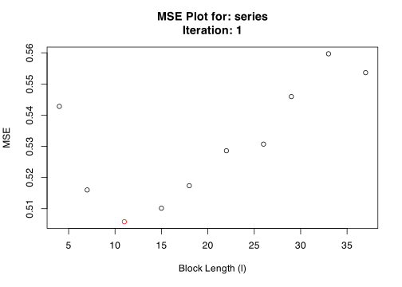
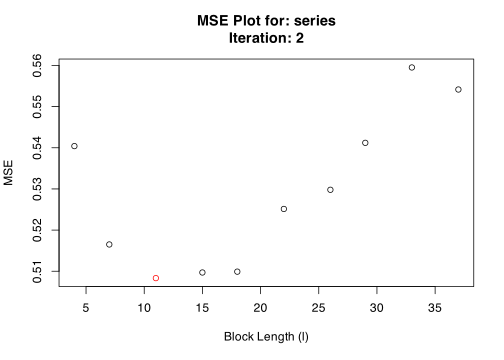
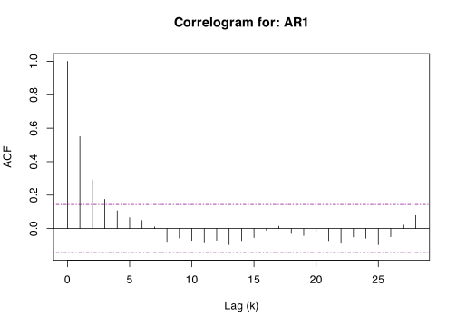
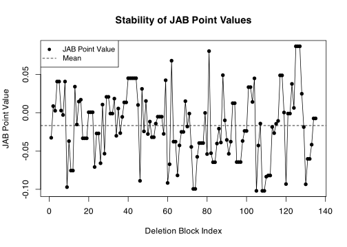

blocklength is an R package used to automatically select the block-length parameter for a block-bootstrap. It is meant for use with dependent data such as stationary time series.
The Story
Regular bootstrap methods rely on assumptions that observations are independent and identically distributed (i.i.d.), but this assumption fails for many types of time series because we would expect the observation in the previous period to have some explanatory power over the current observation. This could occur in any time series from unemployment rates, stock prices, biological data, etc. A time series that is i.i.d. would look like white noise, since the following observation would be totally independent of the previous one (random).
To get around this problem, we can retain some of this time-dependence by breaking-up a time series into a number of blocks with length l. Instead of sampling each observation randomly (with replacement) like a regular bootstrap, we can resample these blocks at random. This way within each block the time-dependence is preserved.
The problem with the block bootstrap is the high sensitivity to the choice of block-length, or the number of blocks to break the time series into.
The goal of blocklength is to simplify and automate the process of selecting a block-length to perform a bootstrap on dependent data. blocklength has several functions that take their name from the authors who have proposed them. Currently, there are three methods available:
hhj()takes its name from the Hall, Horowitz, and Jing (1995) “HHJ” method to select the optimal block-length using a cross-validation algorithm which minimizes the mean squared error (MSE) incurred by the bootstrap at various block-lengths.pwsd()takes its name from the Politis and White (2004) Spectral Density “PWSD” Plug-in method to automatically select the optimal block-length using spectral density estimation via “flat-top” lag windows of Politis and Romano (1995).nppi()takes its name from the Lahiri, Furukawa, and Lee (2007) Nonparametric Plug-In “NPPI” method to select the optimal block-length for block bootstrap procedures. The NPPI method estimates the leading term in the first-order expansion of the theoretically optimal block length by using resampling methods to construct consistent bias and variance estimators for the block-bootstrap. Specifically, this package implements the Moving Block Bootstrap (MBB) method of Künsch (1989) and the Moving Blocks Jackknife (MBJ) of Liu and Singh (1992). as the bias and variance estimators, respectively.
Under the hood, hhj() uses the moving block bootstrap (MBB) procedure according to Künsch (1989) which resamples blocks from a set of overlapping sub-samples with a fixed block-length. However, the results of hhj() may be generalized to other block bootstrap procedures such as the stationary bootstrap of Politis and Romano (1994).
Compared to pwsd(), hhj() is more computationally intensive as it relies on iterative sub-sampling processes that optimize the MSE function over each possible block-length (or a select grid of block-lengths), while pwsd() is a simpler “plug-in” rule that uses auto-correlations, auto-covariance, and the spectral density of the series to optimize the choice of block-length. Similarly, nppi() is another “plug-in” rule, however, due to its heavy reliance on resampling, it can also be computationally intensive compared to pwsd().
For a detailed comparison, see the table below:
| NPPI (Lahiri et al., 2007) | PWSD (Politis & White, 2004) | HHJ (Hall, Horowitz & Jing, 1995) | |
|---|---|---|---|
| Method Type | Nonparametric resampling | Spectral density estimation | Subsampling-based cross-validation |
| Computational Cost | Medium (bootstrap resampling & jackknife) | Low (direct ACF computation) | High (subsampling & cross-validation) |
| Primary Goal | Minimize MSE of bootstrap estimator | Estimate block length using spectral density | Minimize MSE via cross-validation |
| Variance Estimation | Moving Blocks Jackknife-After-Bootstrap (JAB) | Implicitly estimated via spectral density | Uses subsample-based variance estimation |
| Bias Estimation | Directly estimates bias from bootstrap | Indirectly accounts for bias via ACF decay | Uses subsample-based bias estimation |
| Best for | General-purpose estimators, small sample sizes, and quantile estimation | Block-length selection for circular and stationary bootstrap, time series with strong autocorrelation | Estimating functionals with strong dependencies |
| Estimation Capacity | Bootstrap bias, variance, distribution function, and quantile estimation | Bootstrap sample mean only | Bootstrap variance and distribution function estimation |
| Dependency* | User-defined parameters for initial block-length l and number of deletion blocks m
|
User-defined parameters for autocorrelation lag and implied hypothesis tests (4 total) | Requires user-defined parameters for pilot_block_length (l*) and sub_sample size (m) |
* All algorithms have default user-defined parameters recomended by the respective authors.
Installation
You can install the released version from CRAN with:
install.packages("blocklength")You can install the development version from GitHub with:
# install.packages("devtools")
devtools::install_github("Alec-Stashevsky/blocklength")Use Case
We want to select the optimal block-length to perform a block bootstrap on a simulated autoregressive AR(1) time series.
First we will generate the time series:
library(blocklength)
# Simulate AR(1) time series
series <- stats::arima.sim(model = list(order = c(1, 0, 0), ar = 0.5),
n = 500, rand.gen = rnorm)
# Coerce time series to data.frame (not necessary)
data <- data.frame("AR1" = series)Now, we can find the optimal block-length to perform a block-bootstrap. We do this using the three available methods.
1. The Hall, Horowitz, and Jing (1995) “HHJ” Method
## Using the HHJ Algorithm with overlapping subsamples of width 10
hhj(series, sub_sample = 10, k = "bias/variance")
#> Pilot block length is: 3
#> Registered S3 method overwritten by 'quantmod':
#> method from
#> as.zoo.data.frame zoo
#> Performing minimization may take some time
#> Calculating MSE for each level in subsample: 10 function evaluations required.

#> Converged at block length (l): 11
#> $`Optimal Block Length`
#> [1] 11
#>
#> $`Subsample block size (m)`
#> [1] 10
#>
#> $`MSE Data`
#> Iteration BlockLength MSE
#> 1 1 4 0.5428141
#> 2 1 7 0.5159969
#> 3 1 11 0.5058036
#> 4 1 15 0.5101443
#> 5 1 18 0.5173569
#> 6 1 22 0.5285706
#> 7 1 26 0.5307042
#> 8 1 29 0.5459579
#> 9 1 33 0.5596887
#> 10 1 37 0.5536393
#> 11 2 4 0.5404021
#> 12 2 7 0.5165052
#> 13 2 11 0.5083257
#> 14 2 15 0.5096941
#> 15 2 18 0.5099022
#> 16 2 22 0.5251345
#> 17 2 26 0.5297922
#> 18 2 29 0.5411978
#> 19 2 33 0.5595094
#> 20 2 37 0.5541540
#>
#> $Iterations
#> [1] 2
#>
#> $Series
#> [1] "series"
#>
#> $Call
#> hhj(series = series, sub_sample = 10, k = "bias/variance")
#>
#> attr(,"class")
#> [1] "hhj"2. The Politis and White (2004) Spectral Density Estimation “PWSD” Method
# Using Politis and White (2004) Spectral Density Estimation
pwsd(data)
#> $BlockLength
#> b_Stationary b_Circular
#> AR1 9.327923 10.67781
#>
#> $Acf
#> $Acf$AR1
#>
#> Autocorrelations of series 'data[, i]', by lag
#>
#> 0 1 2 3 4 5 6 7 8 9 10
#> 1.000 0.550 0.291 0.175 0.107 0.066 0.049 0.010 -0.078 -0.057 -0.071
#> 11 12 13 14 15 16 17 18 19 20 21
#> -0.081 -0.071 -0.097 -0.073 -0.054 -0.010 0.014 -0.030 -0.042 -0.020 -0.073
#> 22 23 24 25 26 27 28
#> -0.088 -0.050 -0.058 -0.097 -0.049 0.021 0.078
#>
#>
#> $parameters
#> n k c K_N M_max b_max m_hat M rho_k_critical
#> [1,] 500 1 1.959964 5 28 68 3 6 0.1439999
#>
#> $Call
#> pwsd(data = data)
#>
#> attr(,"class")
#> [1] "pwsd"We can see that both methods produce similar results for a block-length of 9 or 11 depending on the type of bootstrap method used.
3. The Lahiri, Furukawa, and Lee (2007) Nonparametric Plug-In “NPPI” Method
# Using Lahiri, Furukawa, and Lee (2007) Nonparametric Plug-In
nppi(data, m = 8)
#> Setting l to recomended value: 3
#> $optimal_block_length
#> [1] 0.1666766
#>
#> $bias
#> [1] 0.01152002
#>
#> $variance
#> [1] 8.831518e-06
#>
#> $jab_point_values
#> [1] -0.0327374132 0.0086065594 0.0025366424 0.0406465091 0.0406465091
#> [6] 0.0027838449 -0.0030100569 0.0406465091 -0.0971565707 -0.0371154550
#> [11] -0.0755599178 -0.0755599178 0.0339749181 -0.0153968136 0.0145322529
#> [16] 0.0169365682 -0.0333963967 -0.0333963967 -0.0333963967 0.0005655976
#> [21] 0.0005655976 0.0005655976 -0.0708860990 -0.0270703095 -0.0270703095
#> [26] -0.0659660916 0.0105882914 -0.0534955263 0.0206597579 0.0206597579
#> [31] -0.0011544990 -0.0011544990 0.0183578992 -0.0301712541 0.0054632495
#> [36] -0.0266459338 -0.0054879294 0.0134722464 0.0134722464 0.0449865026
#> [41] 0.0449865026 0.0449865026 0.0449865026 0.0449865026 0.0100703950
#> [46] -0.0889593545 0.0310801474 -0.0243945020 0.0152544405 -0.0278311082
#> [51] -0.0116288527 -0.0320142219 -0.0320142219 -0.0142486081 -0.0052232227
#> [56] -0.0052232227 -0.0052232227 -0.0276679506 0.0423320598 -0.0917146684
#> [61] -0.0672953105 0.0678550387 -0.0378347310 -0.0378347310 -0.0818476398
#> [66] -0.0427210926 -0.0250356679 -0.0250356679 0.0150383573 -0.0180655321
#> [71] -0.0011544990 -0.0446551570 -0.0994751979 -0.0994751979 -0.0576207962
#> [76] -0.0396419555 -0.0396419555 -0.0396419555 -0.0003119844 -0.0540061018
#> [81] 0.0803656842 -0.0528692544 -0.0646321946 -0.0646321946 -0.0402261089
#> [86] -0.0208329391 -0.0389210110 0.0489710594 -0.0099764121 -0.0355391996
#> [91] -0.0536628938 -0.0378180773 0.0124084253 0.0124084253 -0.0644349773
#> [96] -0.0644349773 -0.0644349773 -0.0369211728 -0.0238227629 -0.0238227629
#> [101] 0.0333384171 0.0333384171 0.0140114628 0.0447980697 -0.1019902258
#> [106] -0.0428492854 -0.0142220238 -0.1019902258 -0.1019902258 -0.0835156159
#> [111] -0.0819563010 -0.0819563010 -0.0185758839 -0.0266705165 -0.0144722001
#> [116] -0.0107257918 0.0487134593 0.0487134593 0.0002546279 -0.0931438608
#> [121] -0.0011345209 -0.0011345209 0.0375753481 0.0062359912 0.0866643452
#> [126] 0.0866643452 0.0866643452 0.0246924924 -0.0187366056 -0.0934362236
#> [131] -0.0603000732 -0.0603000732 -0.0417117852 -0.0074732676 -0.0074732676
#>
#> $l
#> [1] 3
#>
#> $m
#> [1] 8
#>
#> attr(,"class")
#> [1] "nppi"Acknowledgements
A big shoutout to Malina Cheeneebash for designing the blocklength hex sticker! Also to Sergio Armella and Simon P. Couch for their help and feedback!